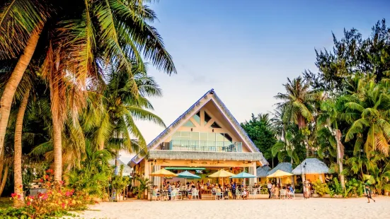

"One cannot eat well, love well, sleep well, if one has not dined well." -Virginia Woolf. After exhausted from work or school, food is something that can put a fuel on your fire day and night. However, food will not be effective if you have not taste a good food. I would like to give you my favorite restaurant places that will surely give you a food to remember.
Best Restaurants to Dine:
Himawari. | Garapan, Saipan

Himawari serves the freshest authentic japanese food in Saipan. They serve good ramen, sushi, and karaage which are my personal favorite. They have their own dedicated store on your way out that has japanese snacks, bento boxes, and japanese desserts that can be taken for souvinir.
What I love about Himawari:
Surf Club. | Chalan Kanoa, Saipan
Surf Club provides a wide selection of foods from arround the world such as American, Asian, and Local foods. In addition, the place provides the best beach scenery in the CNMI where every customer are allowed to take pictures and feel calm while enjoying their food.
What I Love about Surf Club
Zoom Cafe. | Susupe, Saipan

Zoom Cafe has been noted by the locals as one of the best korean fried chicken in the CNMI. The place consist with variety of korean food and has a dedicated karaoke room for parties and guest. They have this one desert called Honey Toasted Bread which is my favorite dessert in this place.
What I Love about Zoom Cafe